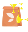

<ion-content [scrollEvents]="true" (ionScroll)="loadRows($event)" [fullscreen]="true" class="bg-lightgray">
  <div style="background-color: #F1F1F1;">
    <app-search-bar></app-search-bar>
  </div>
  <div>
    <div class="m-t-2 m-b" style="padding-top: 50px;">
      <app-main-categories-slides></app-main-categories-slides>
    </div>
    <div class="m-b m-t-2">
      <app-banner-slides></app-banner-slides>
    </div>
  </div>
  
  <div *ngIf="isLoggedIn && countOrders > 0" class="ion-padding" style="padding-top: 0px; padding-bottom: 0px; margin: 1em 0px;" activable>
    <ion-button color="darkbluelomi" (click)="goToOrders()" expand="block" shape="round">
      <div class="flex-between">
        <div style="display: flex; align-items: center;">
          
          <span style="font-weight: 600;">
            ¡Repite tu pedido!
          </span>
        </div>
        <div style="display: flex; align-items: center;">
          <ion-icon style="fill: #FFFFFF;" name="caret-forward-outline"></ion-icon>
        </div>
      </div>
    </ion-button>
  </div>

  <div class="m-t-2 m-b">
    <app-moments-slides></app-moments-slides>
  </div>

  <ng-container *ngIf="trackDeliveryFlag">
    <div *ngFor="let order of pendingOrders">
      <div class="ion-padding" style="padding-top: 0px; padding-bottom: 0px; margin: 1em 0px;">
        <app-delivery-status [pendingOrder]="order"></app-delivery-status>
      </div>
    </div>
  </ng-container>

  
  <div class="moments-card">

    <div feature-flag name="discover-recipe"  style="margin-top: 1em;">
      <app-lomi-favorites-recipes [title]="'¿Aún no sabes que cocinar hoy?'"></app-lomi-favorites-recipes>
    </div>
    
    <!-- <div feature-flag name="discover-recipe" class="ion-padding">
      <div class="divider"></div>
    </div> -->

    <div class="p-1 title-container montserrat">
      <div class="p-1 m-t">
        <app-product-slides [showDivider]="true" [taxon]="1523"></app-product-slides>
      </div>
    </div>
    

    <div feature-flag name="discover-mix" >
      <app-lomi-mix-categories></app-lomi-mix-categories>
    </div>

    <ng-container *ngFor="let moment of taxonsService.moments; let i = index;">
      <div class="p-1 title-container montserrat" *ngIf="!isGlobal || moment.id != 2891 ">
        <div class="p-1 m-t">
          <app-product-slides [showDivider]="true" [taxon]="moment.id"></app-product-slides>
        </div>
      </div>
    </ng-container>

    <app-producers-slides></app-producers-slides>
    <div class="offset"></div>
    <div class="nav-space"></div>
  </div>
</ion-content>
